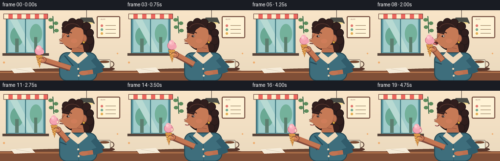
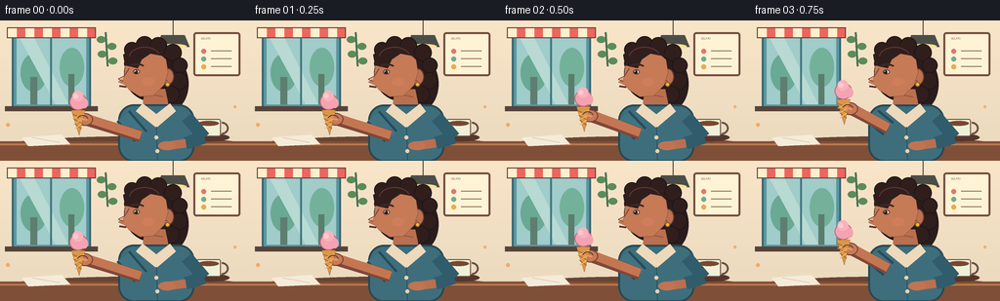

CODING AGENTS AS PIXEL WORLD MODELS
traex/GPT-5.6-Sol · motion_rationality_0002
点击播放 · 原生 RGB 像素
逐轮保存的候选
回放视频、检查图与代码变化。
每份候选均可单独播放。实际图片检查记录在下方工具轨迹中。
候选 01播放与检查图
点击播放 · 原生 RGB 像素


展开代码变化
--- 上一保存版本
+++ 本次保存版本
@@ -0,0 +1,178 @@
+from pathlib import Path
+import math
+import numpy as np
+from PIL import Image, ImageDraw, ImageFilter
+import artifact_io
+
+W,H,N,S = 256,144,20,4
+rng=np.random.default_rng(7)
+
+def E(t):
+ return t*t*(3-2*t)
+
+def interp(a,b,t): return a+(b-a)*E(max(0,min(1,t)))
+
+def pts(seq): return [(round(x*S),round(y*S)) for x,y in seq]
+
+def box(b): return tuple(round(v*S) for v in b)
+
+def draw_frame(k):
+ # action timing: lift 0-6, lick 7-10, withdraw 11-15, chew 16-19
+ if k<=6: p=interp(0,1,k/6)
+ elif k<=10: p=1
+ else: p=interp(1,.28,(k-10)/5) if k<=15 else .28
+ contact = 1 if 7<=k<=10 else 0
+ lick = max(0, 1-abs(k-8.5)/2.0)
+ chew = max(0, math.sin((k-14)*math.pi/2)) if k>=14 else 0
+ breathe=math.sin(2*math.pi*k/N)
+
+ im=Image.new('RGB',(W*S,H*S),(246,223,190)); d=ImageDraw.Draw(im)
+ # softly graded wall
+ for y in range(H*S):
+ u=y/(H*S)
+ c=(int(249-15*u),int(229-12*u),int(200-10*u))
+ d.line((0,y,W*S,y),fill=c)
+ # window / gelato shop background
+ d.rounded_rectangle(box((12,10,93,91)),radius=4*S,fill=(91,151,160),outline=(57,102,111),width=2*S)
+ d.rectangle(box((17,15,88,86)),fill=(160,204,202))
+ # distant outside silhouettes
+ d.ellipse(box((21,34,48,73)),fill=(106,169,148)); d.rectangle(box((31,58,38,86)),fill=(94,126,112))
+ d.ellipse(box((61,28,86,68)),fill=(116,177,155)); d.rectangle(box((70,55,76,86)),fill=(91,125,109))
+ # window highlights
+ d.polygon(pts([(19,16),(34,16),(70,86),(57,86)]),fill=(184,218,211))
+ d.line(pts([(52,15),(52,87)]),fill=(65,120,128),width=2*S)
+ # awning and shelf
+ d.rectangle(box((7,7,98,18)),fill=(236,102,94),outline=(102,62,56),width=S)
+ for x in range(8,98,18): d.rectangle(box((x,8,x+9,17)),fill=(255,239,205))
+ d.rectangle(box((5,88,100,93)),fill=(86,68,59))
+ # framed menu right
+ d.rounded_rectangle(box((198,12,246,57)),radius=3*S,fill=(255,243,214),outline=(114,75,60),width=2*S)
+ d.text((206*S,17*S),'GELATO',fill=(119,68,62),stroke_width=0)
+ for yy,col in [(31,(225,119,111)),(39,(116,170,144)),(47,(226,174,84))]:
+ d.ellipse(box((206,yy-2,211,yy+3)),fill=col); d.line(pts([(216,yy),(237,yy)]),fill=(150,119,91),width=S)
+ # hanging lamp
+ d.line(pts([(177,0),(177,15)]),fill=(80,65,60),width=S)
+ d.polygon(pts([(165,15),(189,15),(194,27),(160,27)]),fill=(75,78,72),outline=(48,50,47))
+ d.ellipse(box((163,24,191,29)),fill=(255,224,149))
+ # wall leaf decoration
+ d.line(pts([(108,12),(110,47)]),fill=(69,111,80),width=2*S)
+ for x,y,sgn in [(108,20,-1),(110,27,1),(109,35,-1),(111,42,1)]:
+ d.ellipse(box((x+(sgn<0)*-9,y-4,x+(sgn>0)*9,y+3)),fill=(91,139,91))
+ # table, with shadow and objects
+ d.ellipse(box((-20,119,280,151)),fill=(105,68,51))
+ d.rectangle(box((0,124,256,144)),fill=(128,79,55))
+ d.line(pts([(0,127),(256,127)]),fill=(184,121,79),width=2*S)
+ d.ellipse(box((192,116,235,124)),fill=(87,55,44))
+ d.rounded_rectangle(box((201,101,226,119)),radius=2*S,fill=(240,239,216),outline=(103,80,66),width=S)
+ d.arc(box((220,104,234,117)),270,90,fill=(103,80,66),width=2*S)
+ d.ellipse(box((203,103,224,108)),fill=(119,72,47))
+ # napkin
+ d.polygon(pts([(22,120),(63,117),(72,127),(29,129)]),fill=(245,235,217)); d.line(pts([(33,120),(61,125)]),fill=(218,204,182),width=S)
+
+ # Character position and subtle body motion
+ by=breathe*.45
+ # rear hair mass
+ d.ellipse(box((127,25,185,83)),fill=(49,31,29),outline=(31,22,23),width=2*S)
+ d.ellipse(box((153,37,193,93)),fill=(43,29,29))
+ # curls along silhouette
+ for x,y,r in [(135,30,8),(148,25,9),(162,26,9),(177,33,9),(184,46,8),(183,62,9),(175,76,9),(135,44,8)]:
+ d.ellipse(box((x-r,y-r,x+r,y+r)),fill=(48,30,29),outline=(32,22,23),width=S)
+ # neck
+ d.polygon(pts([(148,71+by),(169,70+by),(174,94+by),(145,95+by)]),fill=(186,111,78))
+ d.line(pts([(150,75+by),(167,78+by)]),fill=(139,78,61),width=S)
+ # torso / shirt
+ d.rounded_rectangle(box((121,86+by,199,145)),radius=16*S,fill=(62,110,124),outline=(39,73,84),width=2*S)
+ d.polygon(pts([(146,85+by),(160,96+by),(174,85+by),(180,93+by),(160,110+by),(139,93+by)]),fill=(238,217,187))
+ d.line(pts([(160,109+by),(161,143)]),fill=(43,83,96),width=S)
+ d.ellipse(box((158,118,162,122)),fill=(232,211,180)); d.ellipse(box((159,132,163,136)),fill=(232,211,180))
+ # far arm resting on table
+ d.line(pts([(191,99),(209,120),(190,126)]),fill=(49,92,107),width=13*S)
+ d.line(pts([(190,126),(169,129)]),fill=(188,111,78),width=9*S)
+ d.ellipse(box((162,124,180,133)),fill=(193,116,82))
+
+ # face/head in left-facing 3/4 profile. Tiny lean-in near contact
+ lean=1.0*lick
+ # ear behind
+ d.ellipse(box((165,49+by,178,66+by)),fill=(190,113,80),outline=(113,66,55),width=S)
+ d.arc(box((168,53+by,174,62+by)),80,270,fill=(135,75,60),width=S)
+ face=[(143,33+by),(161,32+by),(170,40+by),(172,53+by),(168,66+by),(157,77+by),
+ (143,78+by),(132,71+by),(128,66+by),(121-lean,63+by),(127,58+by),(128,45+by),(134,37+by)]
+ d.polygon(pts(face),fill=(198,122,86),outline=(91,53,47))
+ # nose contour emphasis
+ d.line(pts([(132,49+by),(127,57+by),(121-lean,60+by)]),fill=(130,72,57),width=S)
+ d.line(pts([(121-lean,60+by),(126,62+by)]),fill=(130,72,57),width=S)
+ # swept hair fringe
+ d.polygon(pts([(128,46),(126,35),(139,25),(163,27),(170,37),(154,34),(145,40),(141,49)]),fill=(48,30,29))
+ d.arc(box((132,27,164,48)),185,340,fill=(94,58,49),width=S)
+ # eyebrow, eye looking at cone
+ d.arc(box((132,44+by,148,51+by)),195,340,fill=(64,39,36),width=2*S)
+ d.ellipse(box((136,50+by,143,55+by)),fill=(250,238,215),outline=(101,57,49),width=S)
+ pupilx=137.5-1.2*p
+ d.ellipse(box((pupilx,51+by,pupilx+3.5,54.5+by)),fill=(42,31,29))
+ d.ellipse(box((pupilx+.5,51.3+by,pupilx+1.4,52.2+by)),fill=(255,255,245))
+ # cheek highlight and nose glint
+ d.ellipse(box((145,58+by,158,67+by)),fill=(207,125,90)); d.ellipse(box((124-lean,59+by,126-lean,61+by)),fill=(238,160,113))
+ # mouth expression: open during eating; chew/smile after
+ mx=122-lean; my=67+by
+ if contact:
+ d.ellipse(box((mx-1,my-3,mx+8,my+4)),fill=(87,38,39),outline=(74,38,37),width=S)
+ d.arc(box((mx,my-1,mx+8,my+5)),5,165,fill=(248,164,151),width=2*S)
+ if lick>0.1:
+ d.ellipse(box((mx-4*lick,my-1,mx+4,my+3)),fill=(230,119,119),outline=(128,61,64),width=S)
+ elif k>=14:
+ # closed chewing smile, slightly alternating jaw
+ d.arc(box((mx,my-2+chew,mx+10,my+5+chew)),10,150,fill=(91,43,42),width=2*S)
+ d.arc(box((mx+1,my,mx+8,my+5)),10,150,fill=(239,157,145),width=S)
+ else:
+ d.line(pts([(mx,my),(mx+7,my+1)]),fill=(97,46,44),width=2*S)
+ # earrings
+ d.ellipse(box((169,63,174,68)),fill=(240,184,67),outline=(131,90,35),width=S)
+
+ # Action arm: shoulder -> elbow -> hand, cone follows anatomically
+ # cone center trajectory
+ cx=interp(80,111,p); cy=interp(91,69,p)
+ # small hold motion during licking
+ if contact: cx += math.sin((k-7)*1.7)*.45; cy += math.cos((k-7)*1.5)*.3
+ handx=cx+3; handy=cy+9
+ elbowx=interp(144,139,p); elbowy=interp(119,103,p)
+ shoulder=(126,98+by)
+ # upper arm sleeve then forearm skin, both behind cone
+ d.line(pts([shoulder,(elbowx,elbowy)]),fill=(38,76,91),width=18*S)
+ d.line(pts([shoulder,(elbowx,elbowy)]),fill=(65,116,130),width=13*S)
+ d.line(pts([(elbowx,elbowy),(handx+5,handy+2)]),fill=(127,72,58),width=12*S) # shadow edge
+ d.line(pts([(elbowx,elbowy-1),(handx+5,handy)]),fill=(196,118,82),width=9*S)
+ d.ellipse(box((handx-4,handy-5,handx+12,handy+8)),fill=(199,122,85),outline=(112,62,52),width=S)
+
+ # cone with waffle texture, held in front of fingers
+ cone_top_y=cy+1; tip_y=cy+27
+ d.polygon(pts([(cx-7,cone_top_y),(cx+7,cone_top_y),(cx+1,tip_y)]),fill=(219,151,71),outline=(117,72,39))
+ # clipped-looking waffle lines within cone
+ for q in [4,9,14]:
+ yy=cone_top_y+q
+ half=max(1,7*(1-q/27))
+ d.line(pts([(cx-half,yy),(cx+half,yy+5)]),fill=(169,104,49),width=S)
+ d.line(pts([(cx+half,yy),(cx-half,yy+5)]),fill=(239,184,103),width=S)
+ # ice cream scoop + second lobe; bite/lick indentation appears after contact
+ scoop_col=(244,163,178); shadow=(199,103,128); light=(255,202,208)
+ sy=cy-6
+ d.ellipse(box((cx-9,sy-10,cx+9,sy+7)),fill=scoop_col,outline=shadow,width=S)
+ d.ellipse(box((cx-6,sy-13,cx+5,sy-2)),fill=(249,178,188))
+ d.ellipse(box((cx-5,sy-10,cx,sy-5)),fill=light)
+ d.ellipse(box((cx+3,sy-5,cx+10,sy+5)),fill=scoop_col)
+ # visible lick mark on mouth-facing right edge, from frame 9 onward
+ if k>=9:
+ d.ellipse(box((cx+6,sy-2,cx+11,sy+4)),fill=(246,220,190))
+ d.arc(box((cx+3,sy-4,cx+10,sy+5)),260,100,fill=shadow,width=S)
+ # fingers wrapping cone
+ d.arc(box((handx-4,handy-3,handx+7,handy+5)),190,355,fill=(99,55,48),width=S)
+ d.line(pts([(handx-2,handy),(handx+6,handy+2)]),fill=(231,150,106),width=2*S)
+
+ # foreground ambient highlights and grain-like tiny accents
+ d.ellipse(box((6,105,10,109)),fill=(239,171,108)); d.ellipse(box((239,87,242,90)),fill=(241,174,113))
+ # resize for antialias, mild clarity
+ im=im.resize((W,H),Image.Resampling.LANCZOS)
+ return np.asarray(im,dtype=np.uint8)
+
+frames=np.stack([draw_frame(i) for i in range(N)],axis=0)
+artifact_io.save(frames,Path(__file__).resolve().parent)
+print('saved',frames.shape,frames.dtype)
可观测工具轨迹
实际执行的命令与返回图片。
命令 1exit 0
/bin/bash -lc "cat prompt.txt && printf '\\n--- RULES ---\\n' && cat GENERATION_RULES.md && printf '\\n--- SPEC ---\\n' && cat task_spec.json"
命令 2exit 0
/bin/bash -lc "find . -maxdepth 2 -type f -printf '%p %s bytes\\n' | sort && printf '\\nTOOLS\\n' && command -v ffmpeg || true && command -v convert || true && command -v blender || true && python3 - <<'PY' mods=['cv2','PIL','numpy','imageio','moviepy'] for m in mods: try: x=__import__(m); print(m, 'OK', getattr(x,'__version__','')) except Exception as e: print(m, 'NO',e) PY"
命令 3exit 0
/bin/bash -lc 'cat artifact_io.py'
命令 4exit 0
/bin/bash -lc "cat > generate.py <<'PY'
from pathlib import Path
import math
import numpy as np
from PIL import Image, ImageDraw, ImageFilter
import artifact_io
W,H,N,S = 256,144,20,4
rng=np.random.default_rng(7)
def E(t):
return t*t*(3-2*t)
def interp(a,b,t): return a+(b-a)*E(max(0,min(1,t)))
def pts(seq): return [(round(x*S),round(y*S)) for x,y in seq]
def box(b): return tuple(round(v*S) for v in b)
def draw_frame(k):
# action timing: lift 0-6, lick 7-10, withdraw 11-15, chew 16-19
if k<=6: p=interp(0,1,k/6)
elif k<=10: p=1
else: p=interp(1,.28,(k-10)/5) if k<=15 else .28
contact = 1 if 7<=k<=10 else 0
lick = max(0, 1-abs(k-8.5)/2.0)
chew = max(0, math.sin((k-14)*math.pi/2)) if k>=14 else 0
breathe=math.sin(2*math.pi*k/N)
im=Image.new('RGB',(W*S,H*S),(246,223,190)); d=ImageDraw.Draw(im)
# softly graded wall
for y in range(H*S):
u=y/(H*S)
c=(int(249-15*u),int(229-12*u),int(200-10*u))
d.line((0,y,W*S,y),fill=c)
# window / gelato shop background
d.rounded_rectangle(box((12,10,93,91)),radius=4*S,fill=(91,151,160),outline=(57,102,111),width=2*S)
d.rectangle(box((17,15,88,86)),fill=(160,204,202))
# distant outside silhouettes
d.ellipse(box((21,34,48,73)),fill=(106,169,148)); d.rectangle(box((31,58,38,86)),fill=(94,126,112))
d.ellipse(box((61,28,86,68)),fill=(116,177,155)); d.rectangle(box((70,55,76,86)),fill=(91,125,109))
# window highlights
d.polygon(pts([(19,16),(34,16),(70,86),(57,86)]),fill=(184,218,211))
d.line(pts([(52,15),(52,87)]),fill=(65,120,128),width=2*S)
# awning and shelf
d.rectangle(box((7,7,98,18)),fill=(236,102,94),outline=(102,62,56),width=S)
for x in range(8,98,18): d.rectangle(box((x,8,x+9,17)),fill=(255,239,205))
d.rectangle(box((5,88,100,93)),fill=(86,68,59))
# framed menu right
d.rounded_rectangle(box((198,12,246,57)),radius=3*S,fill=(255,243,214),outline=(114,75,60),width=2*S)
d.text((206*S,17*S),'GELATO',fill=(119,68,62),stroke_width=0)
for yy,col in [(31,(225,119,111)),(39,(116,170,144)),(47,(226,174,84))]:
d.ellipse(box((206,yy-2,211,yy+3)),fill=col); d.line(pts([(216,yy),(237,yy)]),fill=(150,119,91),width=S)
# hanging lamp
d.line(pts([(177,0),(177,15)]),fill=(80,65,60),width=S)
d.polygon(pts([(165,15),(189,15),(194,27),(160,27)]),fill=(75,78,72),outline=(48,50,47))
d.ellipse(box((163,24,191,29)),fill=(255,224,149))
# wall leaf decoration
d.line(pts([(108,12),(110,47)]),fill=(69,111,80),width=2*S)
for x,y,sgn in [(108,20,-1),(110,27,1),(109,35,-1),(111,42,1)]:
d.ellipse(box((x+(sgn<0)*-9,y-4,x+(sgn>0)*9,y+3)),fill=(91,139,91))
# table, with shadow and objects
d.ellipse(box((-20,119,280,151)),fill=(105,68,51))
d.rectangle(box((0,124,256,144)),fill=(128,79,55))
d.line(pts([(0,127),(256,127)]),fill=(184,121,79),width=2*S)
d.ellipse(box((192,116,235,124)),fill=(87,55,44))
d.rounded_rectangle(box((201,101,226,119)),radius=2*S,fill=(240,239,216),outline=(103,80,66),width=S)
d.arc(box((220,104,234,117)),270,90,fill=(103,80,66),width=2*S)
d.ellipse(box((203,103,224,108)),fill=(119,72,47))
# napkin
d.polygon(pts([(22,120),(63,117),(72,127),(29,129)]),fill=(245,235,217)); d.line(pts([(33,120),(61,125)]),fill=(218,204,182),width=S)
# Character position and subtle body motion
by=breathe*.45
# rear hair mass
d.ellipse(box((127,25,185,83)),fill=(49,31,29),outline=(31,22,23),width=2*S)
d.ellipse(box((153,37,193,93)),fill=(43,29,29))
# curls along silhouette
for x,y,r in [(135,30,8),(148,25,9),(162,26,9),(177,33,9),(184,46,8),(183,62,9),(175,76,9),(135,44,8)]:
d.ellipse(box((x-r,y-r,x+r,y+r)),fill=(48,30,29),outline=(32,22,23),width=S)
# neck
d.polygon(pts([(148,71+by),(169,70+by),(174,94+by),(145,95+by)]),fill=(186,111,78))
d.line(pts([(150,75+by),(167,78+by)]),fill=(139,78,61),width=S)
# torso / shirt
d.rounded_rectangle(box((121,86+by,199,145)),radius=16*S,fill=(62,110,124),outline=(39,73,84),width=2*S)
d.polygon(pts([(146,85+by),(160,96+by),(174,85+by),(180,93+by),(160,110+by),(139,93+by)]),fill=(238,217,187))
d.line(pts([(160,109+by),(161,143)]),fill=(43,83,96),width=S)
d.ellipse(box((158,118,162,122)),fill=(232,211,180)); d.ellipse(box((159,132,163,136)),fill=(232,211,180))
# far arm resting on table
d.line(pts([(191,99),(209,120),(190,126)]),fill=(49,92,107),width=13*S)
d.line(pts([(190,126),(169,129)]),fill=(188,111,78),width=9*S)
d.ellipse(box((162,124,180,133)),fill=(193,116,82))
# face/head in left-facing 3/4 profile. Tiny lean-in near contact
lean=1.0*lick
# ear behind
d.ellipse(box((165,49+by,178,66+by)),fill=(190,113,80),outline=(113,66,55),width=S)
d.arc(box((168,53+by,174,62+by)),80,270,fill=(135,75,60),width=S)
face=[(143,33+by),(161,32+by),(170,40+by),(172,53+by),(168,66+by),(157,77+by),
(143,78+by),(132,71+by),(128,66+by),(121-lean,63+by),(127,58+by),(128,45+by),(134,37+by)]
d.polygon(pts(face),fill=(198,122,86),outline=(91,53,47))
# nose contour emphasis
d.line(pts([(132,49+by),(127,57+by),(121-lean,60+by)]),fill=(130,72,57),width=S)
d.line(pts([(121-lean,60+by),(126,62+by)]),fill=(130,72,57),width=S)
# swept hair fringe
d.polygon(pts([(128,46),(126,35),(139,25),(163,27),(170,37),(154,34),(145,40),(141,49)]),fill=(48,30,29))
d.arc(box((132,27,164,48)),185,340,fill=(94,58,49),width=S)
# eyebrow, eye looking at cone
d.arc(box((132,44+by,148,51+by)),195,340,fill=(64,39,36),width=2*S)
d.ellipse(box((136,50+by,143,55+by)),fill=(250,238,215),outline=(101,57,49),width=S)
pupilx=137.5-1.2*p
d.ellipse(box((pupilx,51+by,pupilx+3.5,54.5+by)),fill=(42,31,29))
d.ellipse(box((pupilx+.5,51.3+by,pupilx+1.4,52.2+by)),fill=(255,255,245))
# cheek highlight and nose glint
d.ellipse(box((145,58+by,158,67+by)),fill=(207,125,90)); d.ellipse(box((124-lean,59+by,126-lean,61+by)),fill=(238,160,113))
# mouth expression: open during eating; chew/smile after
mx=122-lean; my=67+by
if contact:
d.ellipse(box((mx-1,my-3,mx+8,my+4)),fill=(87,38,39),outline=(74,38,37),width=S)
d.arc(box((mx,my-1,mx+8,my+5)),5,165,fill=(248,164,151),width=2*S)
if lick>0.1:
d.ellipse(box((mx-4*lick,my-1,mx+4,my+3)),fill=(230,119,119),outline=(128,61,64),width=S)
elif k>=14:
# closed chewing smile, slightly alternating jaw
d.arc(box((mx,my-2+chew,mx+10,my+5+chew)),10,150,fill=(91,43,42),width=2*S)
d.arc(box((mx+1,my,mx+8,my+5)),10,150,fill=(239,157,145),width=S)
else:
d.line(pts([(mx,my),(mx+7,my+1)]),fill=(97,46,44),width=2*S)
# earrings
d.ellipse(box((169,63,174,68)),fill=(240,184,67),outline=(131,90,35),width=S)
# Action arm: shoulder -> elbow -> hand, cone follows anatomically
# cone center trajectory
cx=interp(80,111,p); cy=interp(91,69,p)
# small hold motion during licking
if contact: cx += math.sin((k-7)*1.7)*.45; cy += math.cos((k-7)*1.5)*.3
handx=cx+3; handy=cy+9
elbowx=interp(144,139,p); elbowy=interp(119,103,p)
shoulder=(126,98+by)
# upper arm sleeve then forearm skin, both behind cone
d.line(pts([shoulder,(elbowx,elbowy)]),fill=(38,76,91),width=18*S)
d.line(pts([shoulder,(elbowx,elbowy)]),fill=(65,116,130),width=13*S)
d.line(pts([(elbowx,elbowy),(handx+5,handy+2)]),fill=(127,72,58),width=12*S) # shadow edge
d.line(pts([(elbowx,elbowy-1),(handx+5,handy)]),fill=(196,118,82),width=9*S)
d.ellipse(box((handx-4,handy-5,handx+12,handy+8)),fill=(199,122,85),outline=(112,62,52),width=S)
# cone with waffle texture, held in front of fingers
cone_top_y=cy+1; tip_y=cy+27
d.polygon(pts([(cx-7,cone_top_y),(cx+7,cone_top_y),(cx+1,tip_y)]),fill=(219,151,71),outline=(117,72,39))
# clipped-looking waffle lines within cone
for q in [4,9,14]:
yy=cone_top_y+q
half=max(1,7*(1-q/27))
d.line(pts([(cx-half,yy),(cx+half,yy+5)]),fill=(169,104,49),width=S)
d.line(pts([(cx+half,yy),(cx-half,yy+5)]),fill=(239,184,103),width=S)
# ice cream scoop + second lobe; bite/lick indentation appears after contact
scoop_col=(244,163,178); shadow=(199,103,128); light=(255,202,208)
sy=cy-6
d.ellipse(box((cx-9,sy-10,cx+9,sy+7)),fill=scoop_col,outline=shadow,width=S)
d.ellipse(box((cx-6,sy-13,cx+5,sy-2)),fill=(249,178,188))
d.ellipse(box((cx-5,sy-10,cx,sy-5)),fill=light)
d.ellipse(box((cx+3,sy-5,cx+10,sy+5)),fill=scoop_col)
# visible lick mark on mouth-facing right edge, from frame 9 onward
if k>=9:
d.ellipse(box((cx+6,sy-2,cx+11,sy+4)),fill=(246,220,190))
d.arc(box((cx+3,sy-4,cx+10,sy+5)),260,100,fill=shadow,width=S)
# fingers wrapping cone
d.arc(box((handx-4,handy-3,handx+7,handy+5)),190,355,fill=(99,55,48),width=S)
d.line(pts([(handx-2,handy),(handx+6,handy+2)]),fill=(231,150,106),width=2*S)
# foreground ambient highlights and grain-like tiny accents
d.ellipse(box((6,105,10,109)),fill=(239,171,108)); d.ellipse(box((239,87,242,90)),fill=(241,174,113))
# resize for antialias, mild clarity
im=im.resize((W,H),Image.Resampling.LANCZOS)
return np.asarray(im,dtype=np.uint8)
frames=np.stack([draw_frame(i) for i in range(N)],axis=0)
artifact_io.save(frames,Path(__file__).resolve().parent)
print('saved',frames.shape,frames.dtype)
PY
python3 generate.py"命令 5exit 0
/bin/bash -lc "python3 - <<'PY'
from pathlib import Path
import numpy as np
from PIL import Image
p=Path('.')
files=['pixels.npz','index.html','inspection.png','transition_check.png','generate.py']
for f in files:
q=p/f; print(f,q.exists(),q.stat().st_size if q.exists() else 0)
a=np.load('pixels.npz')['pixels']
print('pixels:',a.shape,a.dtype,'frames:',len(list((p/'frames').glob('*.png'))))
ims=np.stack([np.asarray(Image.open(p/'frames'/f'{i:02d}.png')) for i in range(20)])
print('decoded:',ims.shape,ims.dtype,'range',ims.min(),ims.max())
print('mean frame deltas:',[round(float(np.abs(ims[i].astype(int)-ims[i-1].astype(int)).mean()),2) for i in range(1,20)])
assert ims.shape==(20,144,256,3) and ims.dtype==np.uint8
assert np.all(((a>>16)&255).transpose(2,0,1)==ims[:,:,:,0])
print('validation OK')
PY"保存候选 1 份；完成命令 5 次；可验证图片返回 0 张。原始 API 响应与完整日志保留在本地。